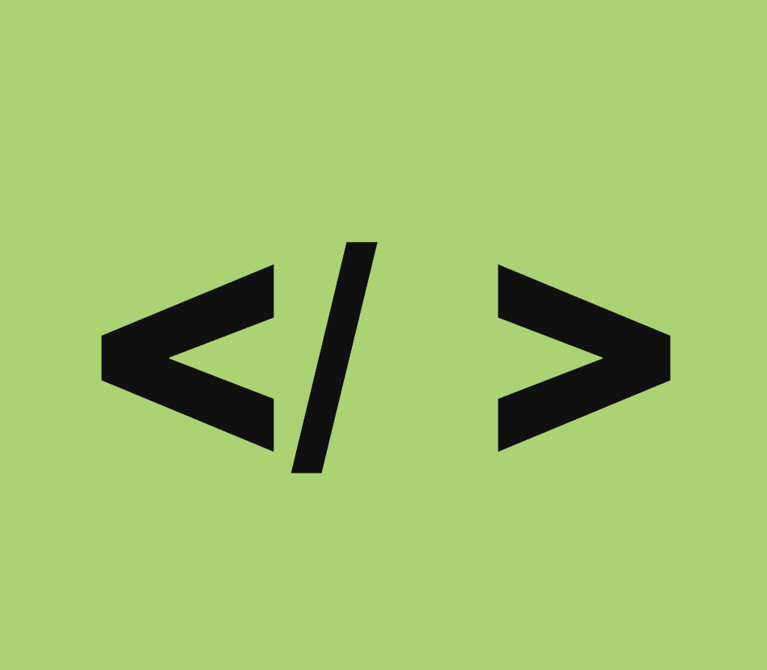
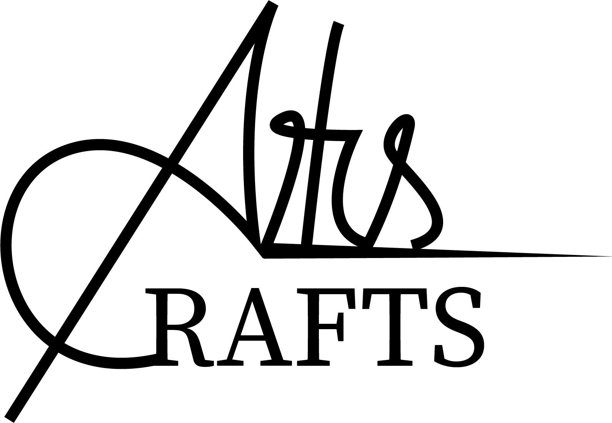

Basic Web
In this section, you will find a Swiss Style responsive website coded by basic HTML and CSS and our group project in redesigning the Exmouth View Hotel website.
In this theme, we learned how to structure content using HTML5 and how to edit it with CSS.
We developed basic skills in digital communication,user interface design,user testing, and responsive web design.
Responsive website

Hear you can see the project that I created.It is a responsive website about the Arts and Crafts style.
Simple design, beautiful materials and decorations like medieval and romantic forms are main characteristics of this style and also principal guidelines followed in order to come up with this project.